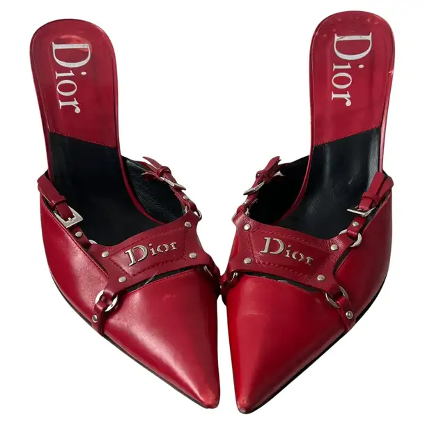
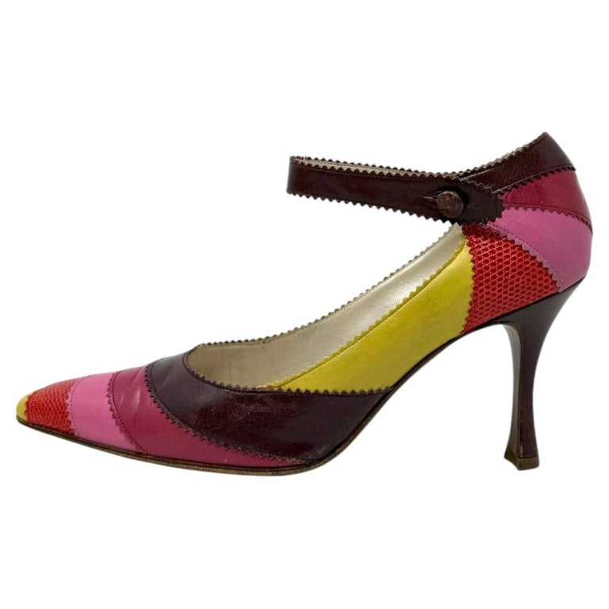
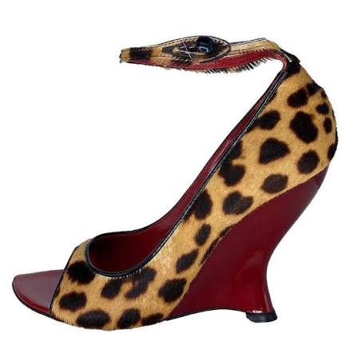

Shop
Stilettos

-
Christian Dior by John Galliano Fall 2001 Red Leather Flame Pumps
Crimson pointed-toe stilettos with dramatic burgundy flame overlays—a collectible early-2000s Dior statement shoe.
$1,250
-
Gucci by Tom Ford 2003 Horsebit Monogram Studded Pumps
Black GG monogram canvas pumps finished with silver Horsebit hardware, studs, and a sharp stiletto heel.
$750
-
Christian Lacroix 1990s Black & Green Suede Pointed Heels
A moody black suede pump with rich metallic-green accents and a slender heel.
$595
-
Manolo Blahnik Black Satin & Red Rose T-Strap Sandals
Delicate black satin stilettos with a romantic cascading red-rose detail at the ankle.
$650
-
Prada 1990s Black Leather Square-Toe Stilettos
Minimalist black leather heels with a slightly squared toe and sleek late-’90s Prada attitude.
$425
-
Versace 1990s Medusa Charm Slingback Stilettos
Black leather slingbacks accented by signature gold-tone Medusa hardware.
$695
Pumps

-
Christian Dior by John Galliano Fall 1998 Mary Jane Pumps
Runway-era multicolor leather and lizard Mary Janes with a pointed toe and thin stiletto heel.
$1,750
-
Chanel 2008 Black Leather CC Pumps
Timeless black leather pumps finished with subtle interlocking-CC details.
$465
-
Yves Saint Laurent Rive Gauche 2004 Suede Pumps
Soft suede pumps from the early 2000s with a clean, classic shape that works day to night.
$745
-
Manolo Blahnik Taylerbinu Pink & Gray Suede d’Orsay Pumps
A rare two-tone suede pointed-toe pump with elegant open sides and delicate contrast coloring.
$395
-
Louis Vuitton Vintage Suede T-Strap Pumps
Warm suede T-strap pumps with a polished, feminine silhouette and understated archival appeal.
$285
-
Prada 1998 Leather Pumps
A refined late-’90s Prada pump in smooth leather, made for a minimalist vintage wardrobe. cooked
$355
Wedges

-
Yves Saint Laurent by Tom Ford Fall 2004 Leopard Pony-Hair Wedges
A bold pony-hair wedge from Tom Ford’s final YSL collection, finished with red lacquered heels.
$1,250
-
Yves Saint Laurent by Tom Ford Fall 2004 Embroidered Chinoiserie Wedges
Taupe floral wedges with intricate embroidery and a dramatic early-2000s runway silhouette.
$1,495
-
Dolce & Gabbana Spring 1998 Blue & Gold Wedge Sandals
Runway wedge sandals in blue and gold with a delicate ankle strap and sculptural heel.
$1,200
-
Yves Saint Laurent 1970s Red Logo Silk Platform Wedges
Bright red silk platform wedges woven with YSL logo fabric—rare, playful, and unmistakably vintage.
$425
-
Prada Fall 2014 Black Leather T-Strap Platform Wedges
Architectural black leather wedges with a rounded toe, T-strap, and high platform.
$440
-
Marni Early-2000s Black Suede Cutout Wedge Boots
Sculptural black suede wedges with distinctive cutout details and a fashion-forward Y2K shape.
$950